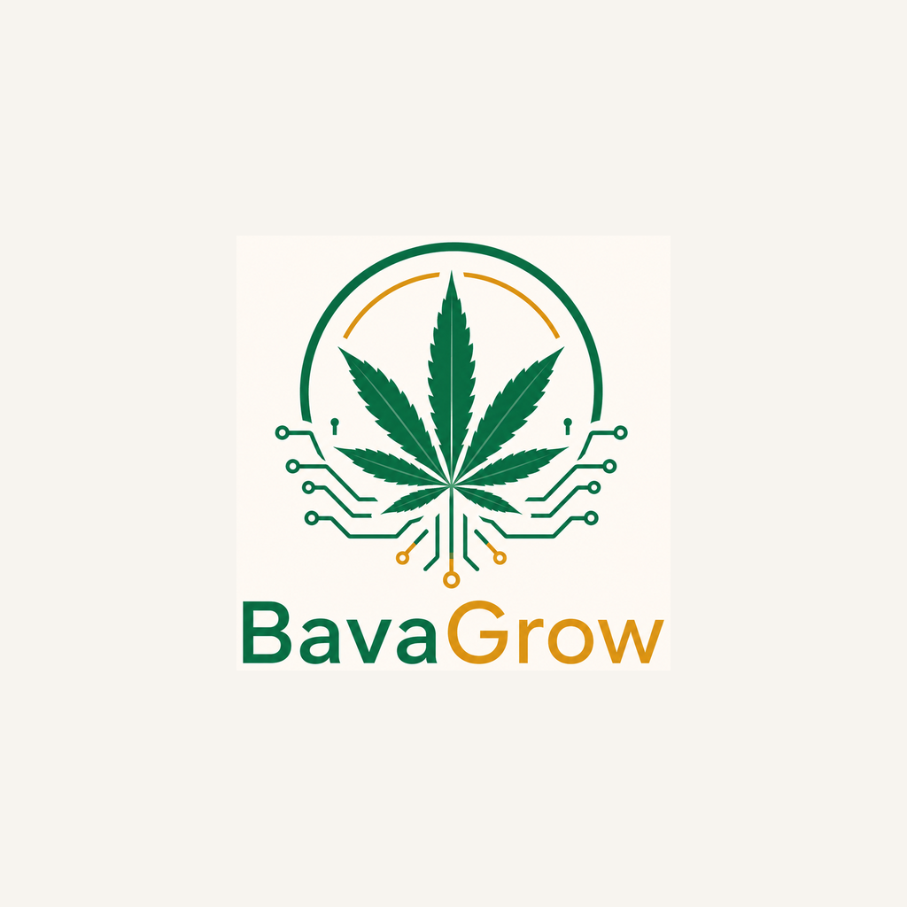

Datenschutzerklärung für die App BavaGrow
Stand: 27. Oktober 2026
Kurz gesagt
- BavaGrow braucht kein Konto und keine Anmeldung.
- Deine Pflanzen, Einträge, Fotos und Einstellungen werden nur auf deinem Gerät gespeichert. Ich habe darauf keinen Zugriff.
- Es gibt keine Werbung, kein Tracking und keine Analyse-Werkzeuge.
- Daten verlassen dein Gerät nur, wenn du selbst Home Assistant verbindest, ein Backup teilst oder BavaGrow Pro kaufst.
1. Verantwortlicher
Justin Plaschka, [STRASSE UND HAUSNUMMER], [PLZ ORT], Deutschland
E-Mail: [E-MAIL]
2. Daten auf deinem Gerät
Alles, was du in BavaGrow einträgst – Pflanzen, Gieß- und Düngeeinträge, Notizen, Messwerte, Erinnerungen und Einstellungen – speichert die App ausschließlich lokal auf deinem Gerät. Diese Daten werden nicht an mich oder an Dritte übertragen. Löschst du die App, werden sie mit ihr gelöscht.
Hast du in Android die Sicherung in dein Google-Konto eingeschaltet, kann Android die App-Daten dort sichern. Das steuert Android bzw. Google, nicht BavaGrow; Zugangsdaten für Home Assistant sind davon ausgenommen.
3. Berechtigungen
- Kamera: nur, wenn du ein Foto für eine Pflanze aufnimmst.
- Fotos auswählen: über die Bildauswahl von Android. Die App sieht nur die Bilder, die du auswählst. Sie werden als Kopie in der App gespeichert.
- Bilder speichern: nur, wenn du ein Foto ausdrücklich in deiner Galerie speicherst.
- Benachrichtigungen: für Erinnerungen, die du selbst anlegst. Sie werden auf dem Gerät geplant, nicht über einen Server verschickt.
- Internet: nur für Home Assistant und den Pro-Kauf (siehe unten).
4. Home Assistant (optional)
Verbindest du BavaGrow mit deinem Home-Assistant-Server, ruft die App Messwerte (z. B. Temperatur und Luftfeuchtigkeit) direkt von der Adresse ab, die du eingibst – im Heimnetz oder über einen Fernzugang wie Nabu Casa. Die Verbindung läuft unmittelbar zwischen deinem Gerät und deinem Server; ich erhalte keine Daten. Dein Zugangs-Token wird verschlüsselt auf dem Gerät gespeichert. Für den Server und einen etwaigen Fernzugang gelten die Datenschutzbestimmungen des jeweiligen Anbieters.
5. Backups
Erstellst du ein Backup, legt die App eine Datei an und öffnet das Teilen-Menü von Android. Wohin die Datei geht (z. B. Google Drive, E-Mail), entscheidest allein du. Das Backup kann auch dein Home-Assistant-Token enthalten – bewahre es entsprechend sicher auf.
6. Kauf von BavaGrow Pro
BavaGrow Pro ist ein einmaliger In-App-Kauf. Die Zahlung wickelt Google Play ab; deine Zahlungsdaten erhalte ich nicht. Es gilt die Datenschutzerklärung von Google.
Um den Kauf zu prüfen und auf deinen Geräten wiederherzustellen, nutzt die App den Dienst RevenueCat (RevenueCat, Inc., 1032 E Brandon Blvd #3003, Brandon, FL 33511, USA). Dabei werden verarbeitet: eine zufällige, anonyme App-Kennung, die Kaufbelege von Google Play (Produkt, Zeitpunkt, Preis, Land), technische Angaben wie App- und Android-Version sowie deine IP-Adresse. Name, E-Mail-Adresse oder die Inhalte deiner App werden nicht übermittelt.
Rechtsgrundlage ist Art. 6 Abs. 1 lit. b DSGVO (Erfüllung des Kaufvertrags). RevenueCat verarbeitet die Daten in den USA; die Übermittlung ist durch EU-Standardvertragsklauseln abgesichert. Weitere Informationen: Datenschutzerklärung von RevenueCat.
7. Diese Webseite
Diese Seite wird über GitHub Pages bereitgestellt (GitHub, Inc., USA). Beim Aufruf verarbeitet GitHub technisch notwendige Daten wie deine IP-Adresse, um die Seite auszuliefern. Rechtsgrundlage ist Art. 6 Abs. 1 lit. f DSGVO. Siehe die Datenschutzerklärung von GitHub. Ich setze keine Cookies und kein Tracking ein.
8. Kinder
BavaGrow richtet sich nicht an Kinder unter 16 Jahren.
9. Deine Rechte
Du hast das Recht auf Auskunft, Berichtigung, Löschung, Einschränkung der Verarbeitung, Datenübertragbarkeit und Widerspruch (Art. 15–21 DSGVO). Da ich keine Daten aus der App erhalte, kannst du die meisten Daten direkt in der App ändern oder löschen. Für Fragen zum Pro-Kauf schreib mir an die oben genannte E-Mail-Adresse.
Du kannst dich außerdem bei einer Datenschutz-Aufsichtsbehörde beschweren, zum Beispiel bei der Behörde deines Bundeslandes.
10. Änderungen
Ändert sich die App so, dass andere Daten verarbeitet werden, passe ich diese Erklärung an. Es gilt die jeweils hier veröffentlichte Fassung.